Welcome, I'm
Secretary General, Machakos University
BSc Public Health Student | Mental Health Advocate | Peer Counselor
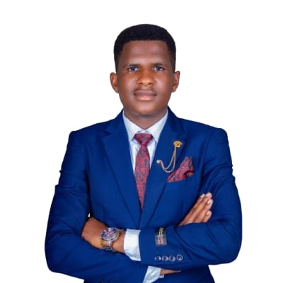
Current Leadership Position
Former Congressional Role
Leadership Certificates
Community Based Organisation Founded
About me
Paul Sumba Moses is a Public Health student at Machakos University, a student leader, mental health advocate, and peer counselor dedicated to empowering young people and promoting mental well-being. He has served as a Congressman during the 2025/2026 academic year and currently serves as the Secretary General of Machakos University. He is also the founder and Executive Director of The Neurogreen CBO in Machakos County.Through leadership, advocacy, and community engagement, he continues to champion mental health awareness and the prevention of drug and substance abuse among youths.
Leadership journey
2025/2026 academic year
Machakos University
The Neurogreen CBO, Machakos County
Machakos University
Areas of interest
Championing student rights, representation, and institutional governance through servant leadership and democratic values.
Promoting evidence-based public health interventions, disease prevention strategies, and equitable access to healthcare.
Creating opportunities for young people to discover their potential, develop leadership skills, and drive community transformation.
Advocating for sustainable environmental practices, climate resilience, and green community initiatives through The Neurogreen CBO.
Driving inclusive community growth through collaboration, volunteerism, and engagement with educational institutions and government agencies.
Committed to ethical governance, policy advocacy, and public service as pathways to building stronger, more accountable institutions.
Advocacy & community impact
Experience
Gained professional experience contributing to organizational operations, teamwork, and project delivery in a dynamic work environment, building practical skills that complement his academic and leadership journey.
Actively leads and participates in mental health awareness campaigns, peer counseling sessions, and community outreach programmes targeting youth in Machakos County and beyond, promoting mental well-being and resilience among young people.
As founder and executive member of Neurogreen Community Based Organisation in Machakos County, Paul drives community engagement initiatives focused on youth empowerment, environmental awareness, and sustainable community development.
Champions prevention programmes targeting drug and substance abuse among university students and youth, creating awareness through workshops, peer-to-peer engagement, and community outreach activities.
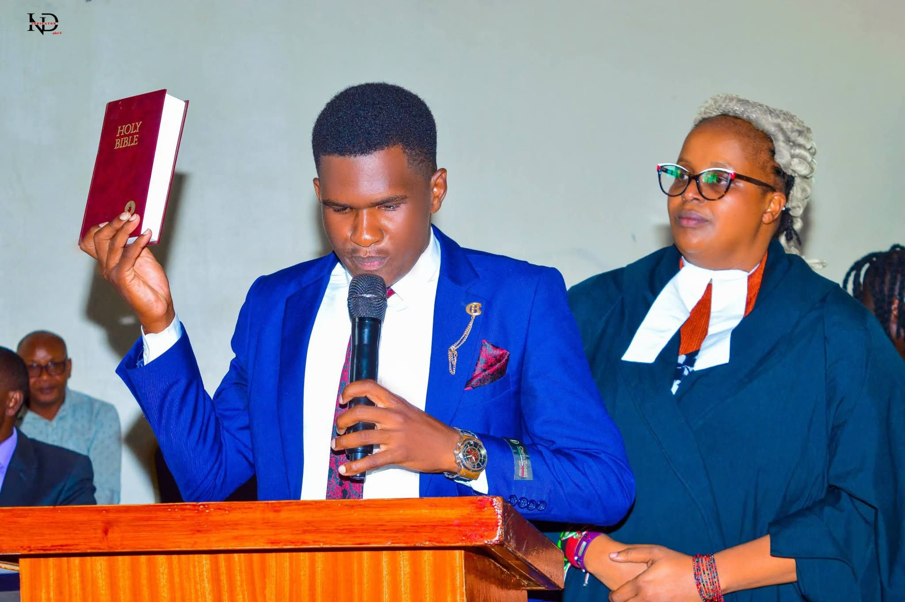
Taking the oath of office during the SAMU Inauguration Ceremony, April 2026
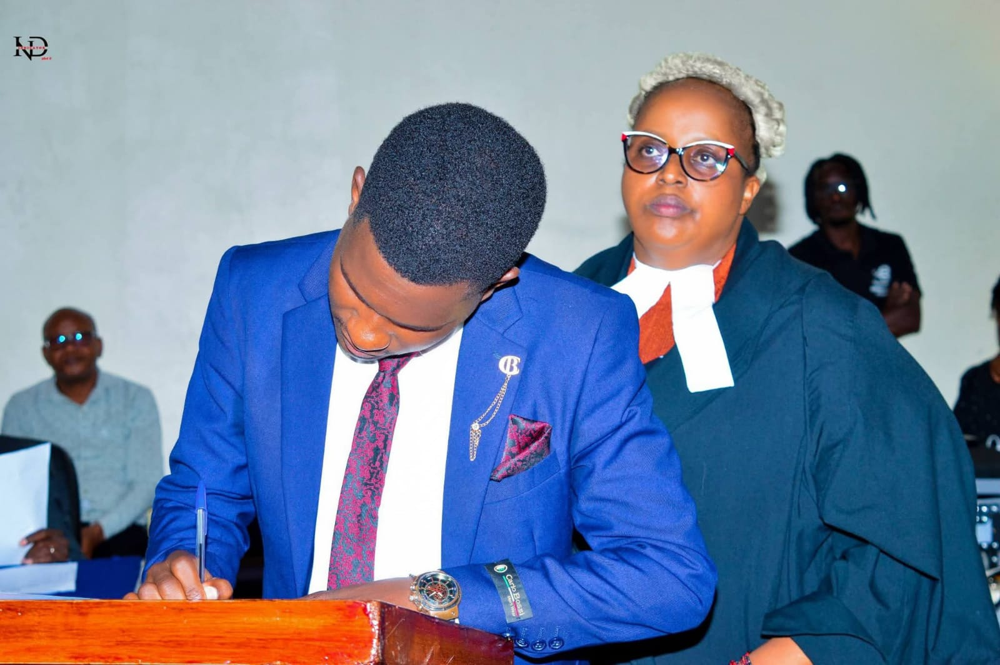
Signing official documents during the inauguration ceremony, Machakos University
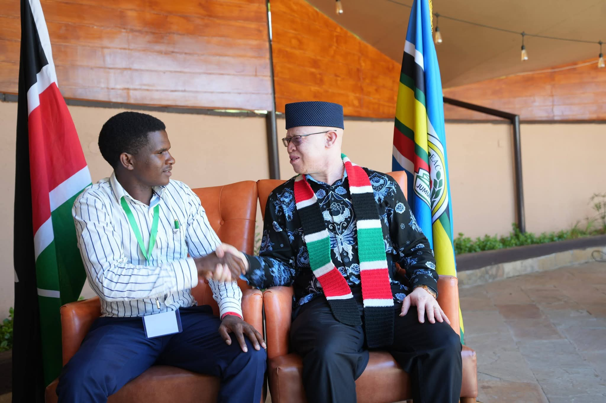
Networking with a senior government official at a national leadership forum
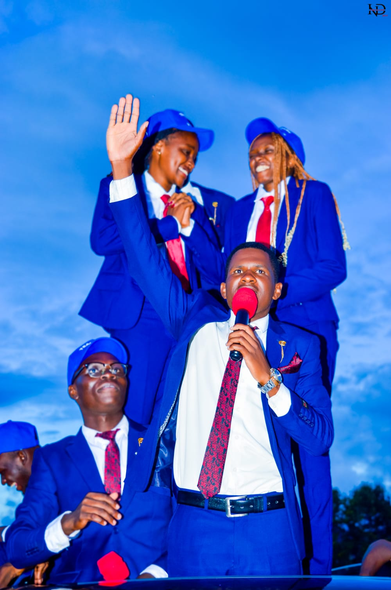
Addressing supporters during the student leadership campaigns, Machakos University
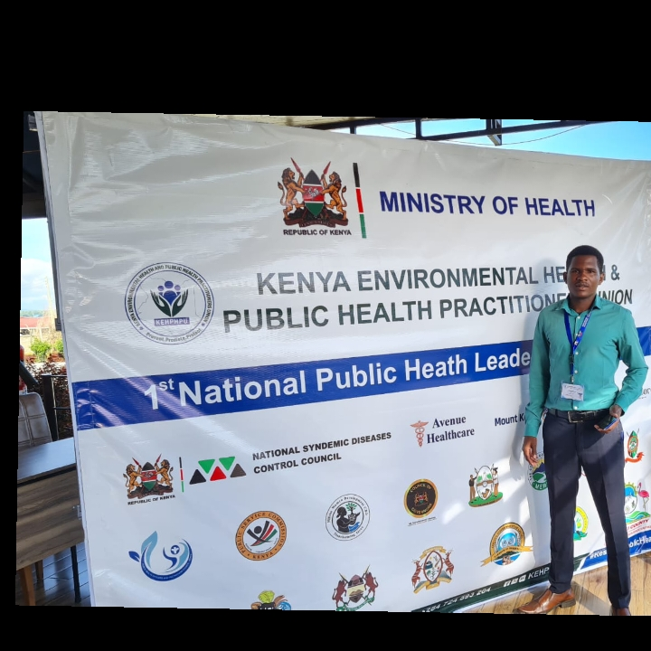
Representing at the 1st National Public Health Leadership Summit, Lake Naivasha, May 2026
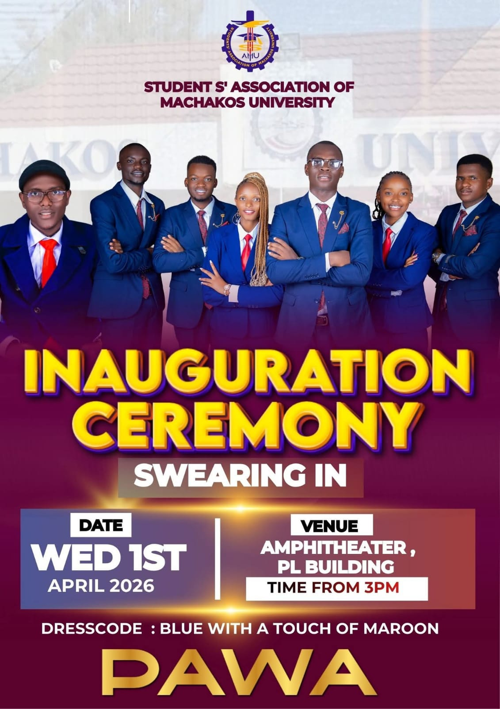
SAMU Inauguration Ceremony — Swearing In, Amphitheater PL Building, April 2026
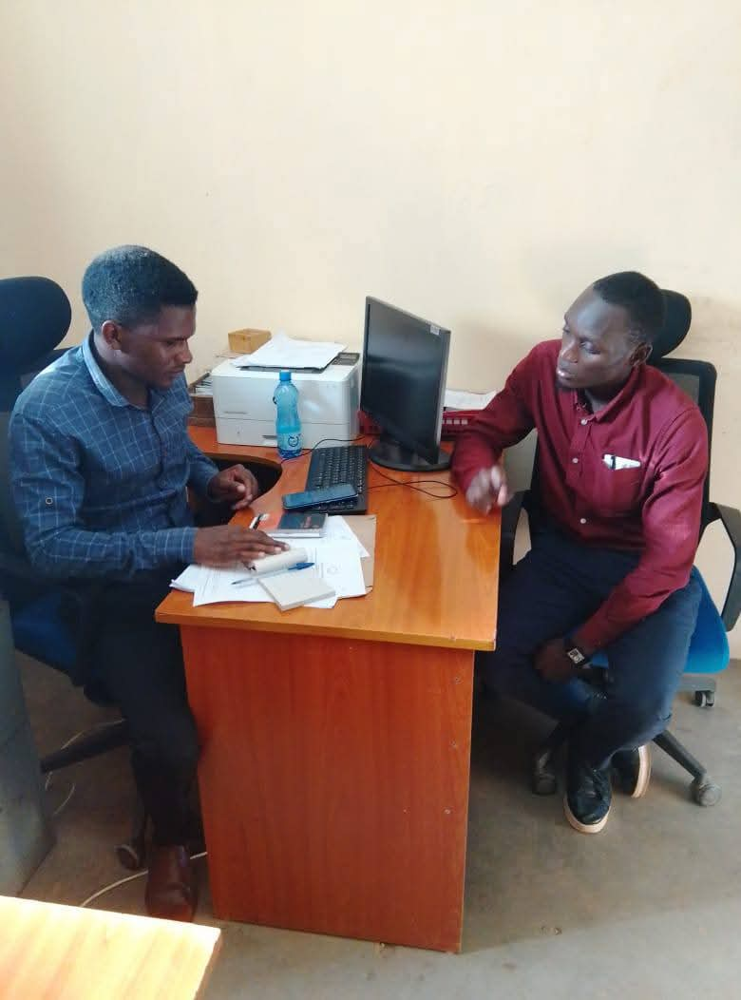
Engaging the Chairman of MUCSA in a strategic discussion on youth leadership and student welfare
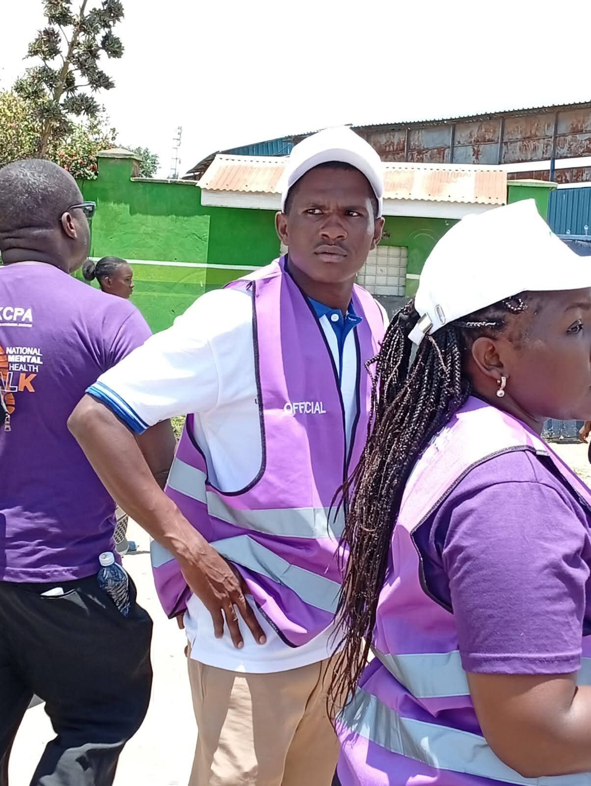
Participating in the National Mental Health Awareness Walk in partnership with KCPA, Machakos County
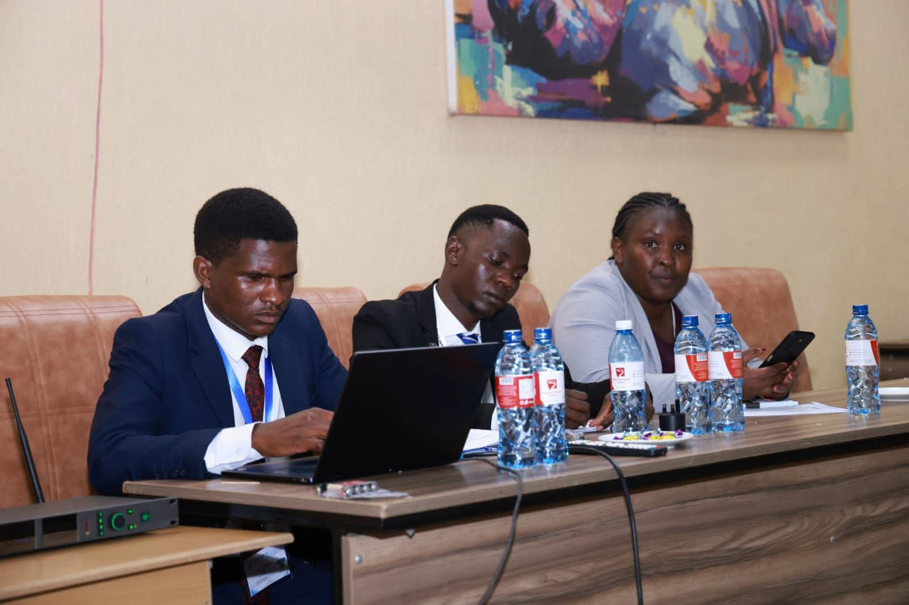
Serving as rapporteur at the 1st National Public Health Leadership Summit, Lake Naivasha Resort, May 2026
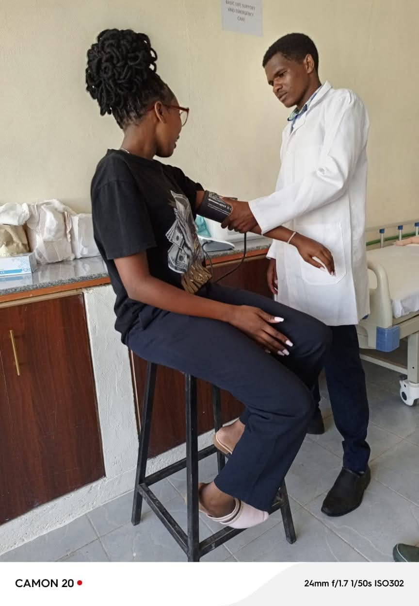
Hands-on clinical practice — conducting a health assessment as part of BSc Public Health training, Machakos University
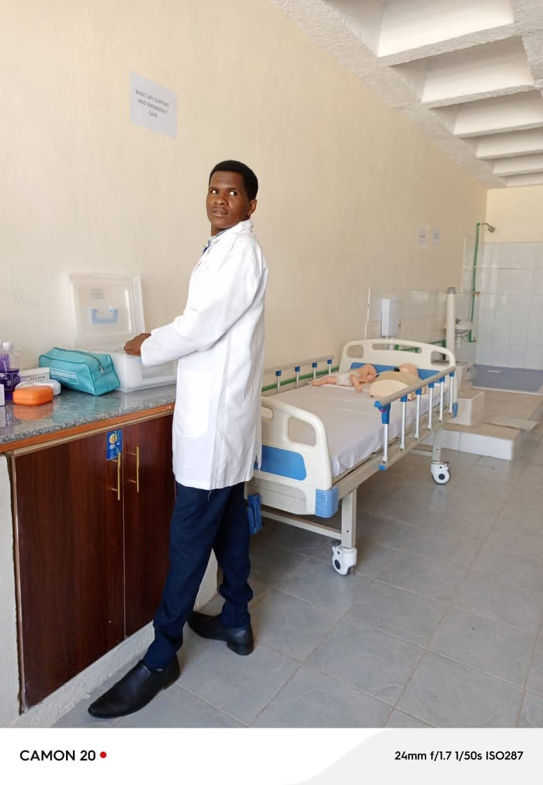
In the clinical simulation lab during Basic Life Support and Emergency Care practical training, Machakos University
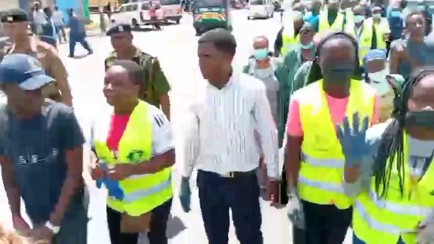
Leading a community outreach walk alongside volunteers and officials, championing youth empowerment and public health awareness
Achievements
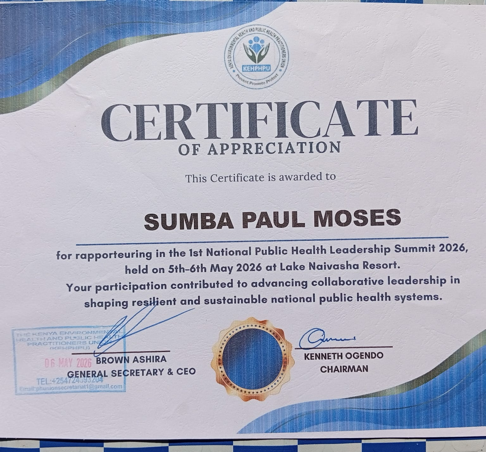
Recognized by KEHPHU for rapporteuring at the 1st National Public Health Leadership Summit, May 2026, Lake Naivasha Resort.
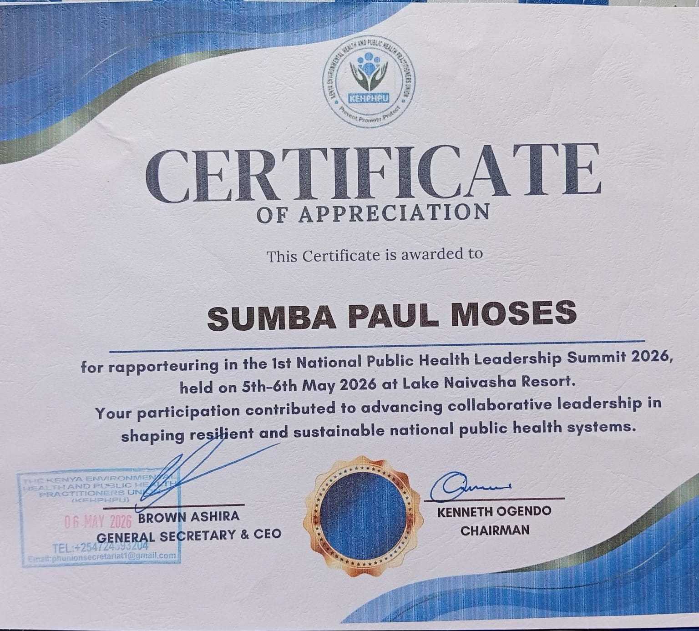
Recognized by Machakos University Western Association (M.U.W.A) for exemplary leadership as Busia County Representative, 2024–2025.